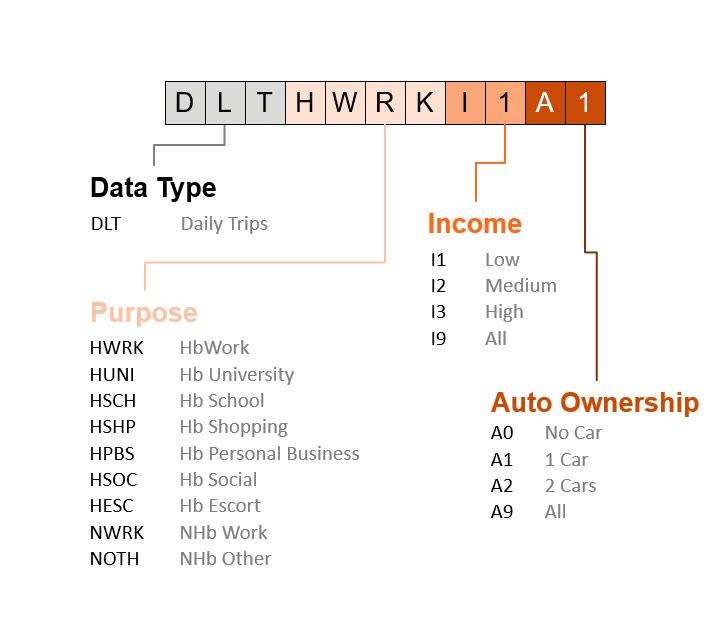

Naming Conventions¶
Matrix Names¶
Matrix names stored either as intermediate or final data will have the following naming conventions:
- Data Type (dtype)
- DLT – Daily trips (Logsum)
- LSM – Logsum utility (Logsum)
- AMT – AM trips (Logsum)
- MDT – Midday trips (Logsum)
- PMT – PM trips (Logsum)
- AMM – AM time (ROH)
- MDM – Midday time (ROH)
- PMM – PM constant (ROH)
- AMC – AM constant (ROH)
- MDC – Midday constant (ROH)
- PMC – PM constant (ROH)
- Purpose
- HWRK – Home-based work
- HUNI – Home-based university
- HSCH – Home-based school
- HSHP – Home-based shopping
- HPBS – Home-based personal business
- HSOC – Home-based social
- HESC – Home-based escort
- NWRK – Non-home-based work
- NOTH – Non-home-based other
- Income
- I1 – low
- I2 – medium
- I3 – high
- I9 – all
- Auto Ownership
- A0 – no car
- A1 – 1 car
- A2 – 2 cars
- A9 – all
- Mode
- SOV – single occupancy vehicle
- HOV – high occupancy vehicle
- BUS – bus
- RAL – rail
- WCE – West Coast Express
- LGV – light truck
- HGV – heavy truck
This is an example for daily trip for home-based work, low income and 1-car household:
